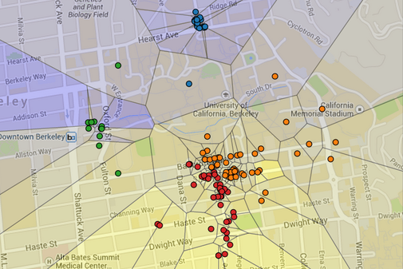

Welcome to Yian Liou's Website!
About Me

Hi! I am Yian Liou. I am a Electrical Engineering and Computer Sciences student at UC Berkeley from the Bay Area.
I write occasionally on my chess blog at chess.com about my chess experiences. I enjoy short long distance runs and nature hikes.
Email me at
yliou@berkeley.edu Github LinkedInProjects
NBA Analytics: Scraped and cleaned data of NBA Player statistics to perform statistical analysis on the relationship between a player's skills and salary. Written in R.
Yelp Maps: Created a visualization of restaurant ratings using machine learning and Yelp Dataset. Written in Python

Bearmaps: Rastered images on a map of UC Berkeley for zooming in and out, implemented route search between two locations, autocomplete and search locations. Written in Java

Chess

Online Chess activity:
Internet Chess Club: User name: Yummy2
Chess.com: User name: Yian123,
Chess Blog
For more information about my childhood chess career, click here: Junior Chess Career
My Past Chess Coaches: Michael Aigner, Larry Christiansen, Predrag Trajkovic
Article: How to go from 1600 USCF to 2000 USCF: Improving from 1600 to 2000 USCF